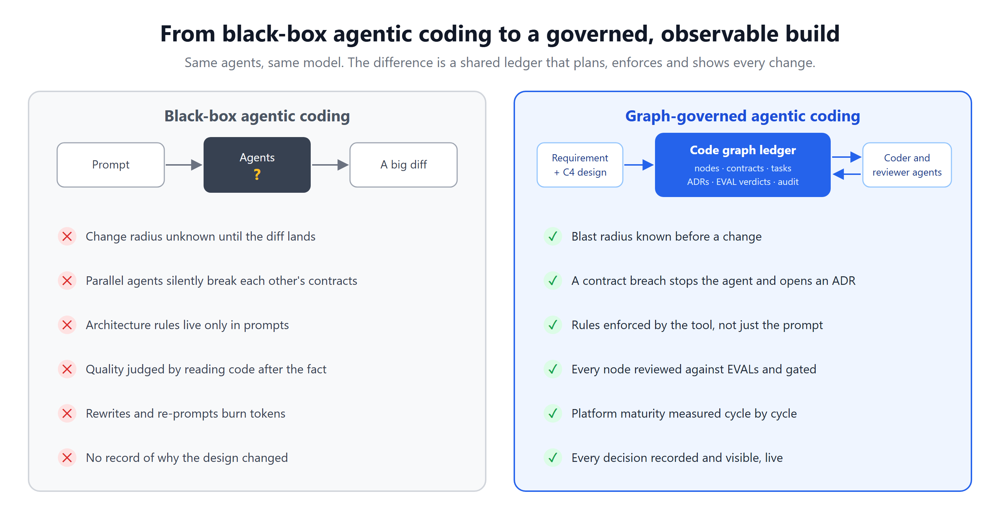
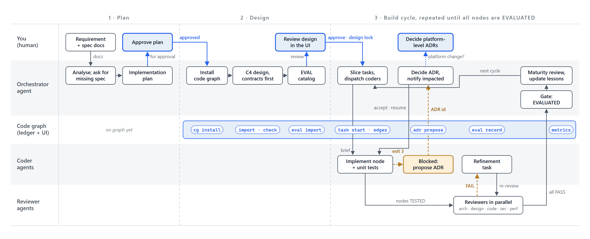
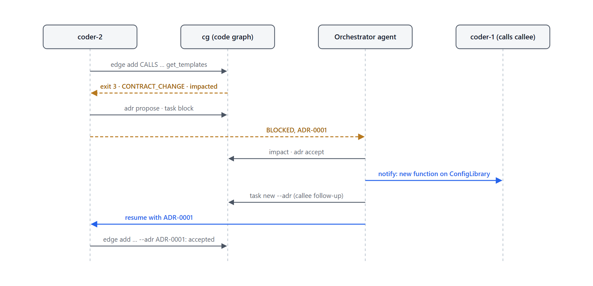
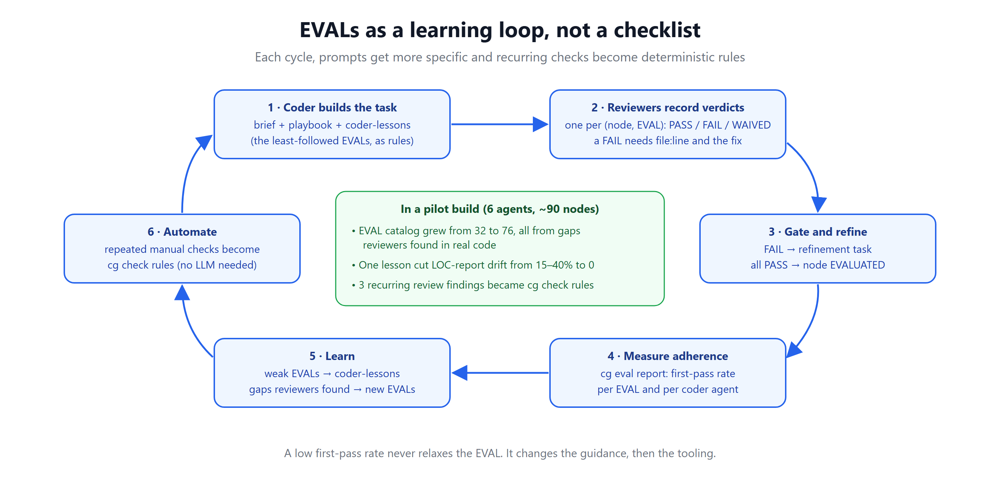
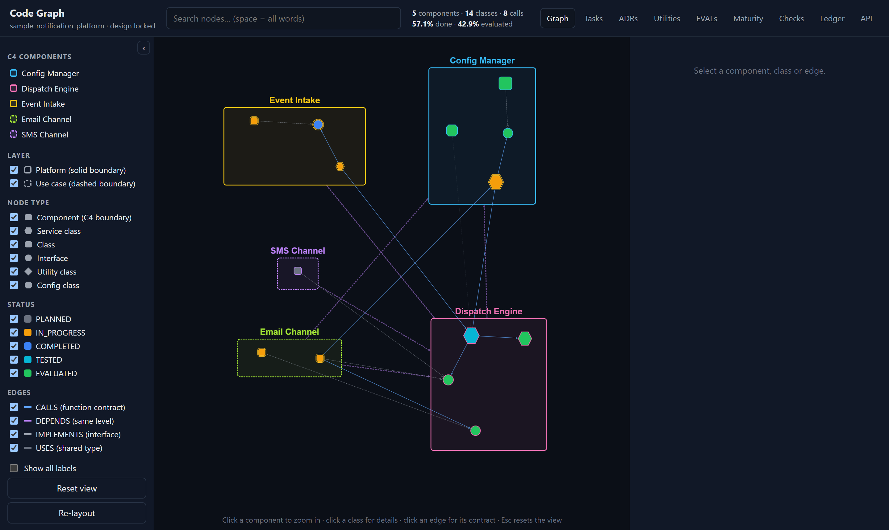
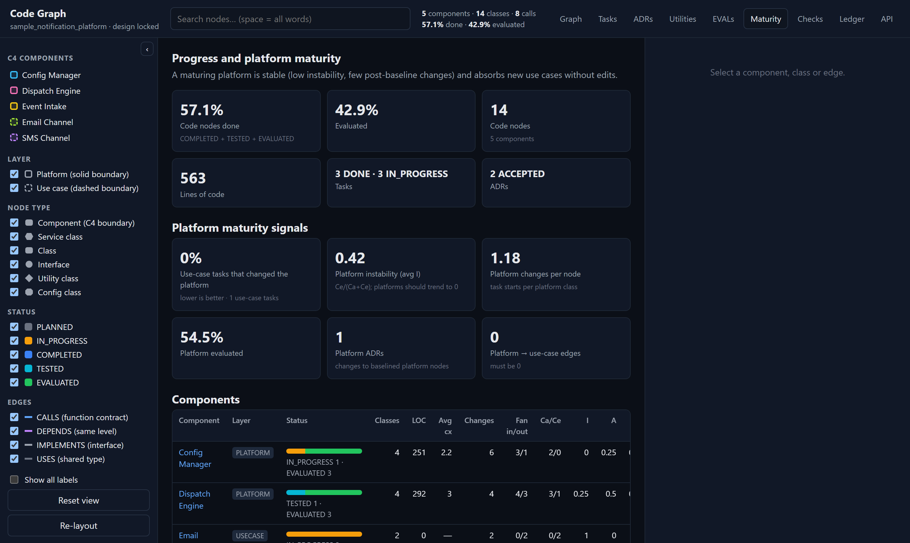
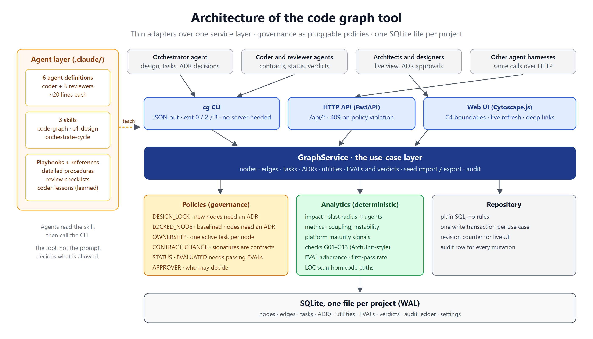

Code Graph: observable, governed agentic coding
AI coding agents are fast, but they usually work as a black box: the plan and the rules live in a prompt, and all you can inspect is the diff at the end. Code Graph opens the box. Agents plan, build and review against a shared C4 graph that records every contract, task, ADR and EVAL verdict, and the tool, not the prompt, decides which changes are allowed.

Why teams use it
Fewer rewrites
Contracts are agreed before coding, and the change radius of any edit is known before it is made, which saves tokens and rework.
Parallel agents without collisions
A node belongs to one active task. Contract changes go through an ADR with an exact list of impacted agents.
Architecture that holds
Platform-first layering, dependency rules and lifecycle gates are enforced by the tool, not by hope.
Decisions you can audit
ADRs are linked to the nodes they cover, and every change is in an audit ledger.
Quality you can measure
Reviewer agents record a verdict per node and EVAL. First-pass rates show which rules coders follow unprompted.
Works beside any harness
Everything is a CLI call or an HTTP request, so it adds governance to the agent framework you already use.
How a build flows
An orchestrator agent turns the approved plan into C4 nodes (components, service classes, classes, interfaces, config and utility classes). Every call between classes becomes a CALLS edge with its exact signature and purpose. The design is checked and locked, then coder agents implement tasks in parallel and reviewer agents (architecture, application design, code, security, performance) record verdicts in the graph.

Governance: the tool decides what is allowed
Policies run on every write. A blocked change returns exit code 3 (HTTP 409) with the reason and the next step, and it proceeds only once an architecture decision record is accepted.
- DESIGN_LOCK: no new or removed nodes after the design is locked, without an ADR.
- LOCKED_NODE: tested and evaluated code changes only under an ADR or a review refinement.
- OWNERSHIP: an agent cannot touch a node inside another agent's active task.
- CONTRACT_CHANGE: changing a signature others use, or demanding a new function from another agent's node, needs an ADR.
- STATUS: lifecycle gates cannot be skipped, and a failing EVAL blocks the final gate.
- APPROVER: only approvers accept ADRs, lock the design or change settings.

EVALs that teach the coders
A baseline catalog of EVALs covers architecture, application design, code, business logic, security and performance; projects add their own. Deterministic, ArchUnit-style checks back them wherever possible. The orchestrator turns the least-followed EVALs into lessons in the coder playbook, so the next cycle passes more on the first try.

See every change as it happens
A live web UI shows C4 boundaries, nodes colored by lifecycle status, function contracts on edges, tasks, ADRs, EVAL adherence, platform-maturity metrics and the full audit ledger. Agents can hand people deep links to the exact node, edge or ADR.


Architecture of the tool
Thin adapters (CLI, HTTP API, web UI) sit over one service layer. Governance is a list of pluggable policies, analytics are deterministic, and the repository is plain SQL over one SQLite file per project. The CLI needs only the Python standard library.

Quick start
Replay a small orchestrated build, then open the UI. The demo shows the tool blocking an edit to another agent's node, holding a node at the final gate because of a review failure, and stopping a contract change until an ADR is accepted.
git clone https://github.com/aishwaryajayanth1820-git/code_graph_agentic_observable_coding.git
cd code_graph_agentic_observable_coding/code_graph_tool
pip install -r requirements.txt
python examples/demo.py
python cg.py --db examples/demo.db serve --port 8770
# open http://127.0.0.1:8770/ui/To use it on your own project: python code_graph_tool/cg.py install path/to/project --with-claude, then follow the README.
Questions
- Does it replace my agent framework?
- No. It is a governance layer beside it. Your harness reads C4 context from the graph, treats exit code 3 or HTTP 409 as a circuit breaker, and reports changes and verdicts back.
- Which coding agents does it work with?
- It ships ready-made agents, skills and playbooks for Claude Code. Any agent that can run a command or call an HTTP API can use it.
- What does it need?
- Python 3.10 or later. The CLI uses only the standard library; the web UI needs FastAPI and Uvicorn.
- Is it free to use?
- Yes, under the Apache License 2.0, including commercial use. If you build on it, keep its NOTICE file and credit the project.